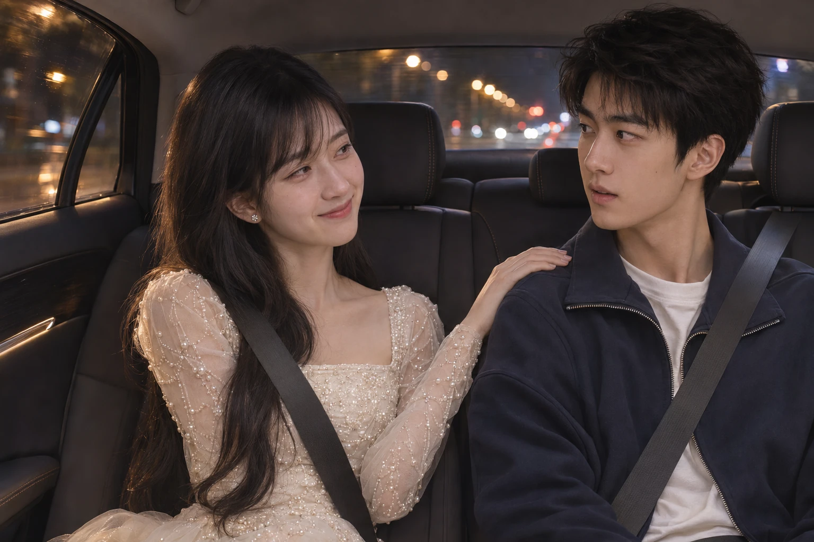
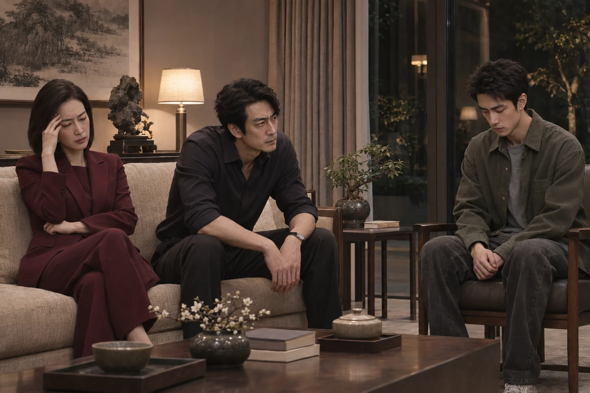
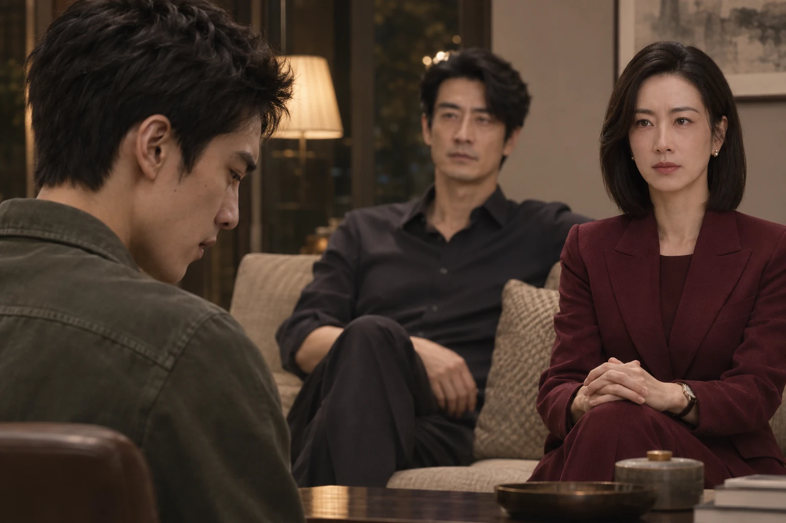
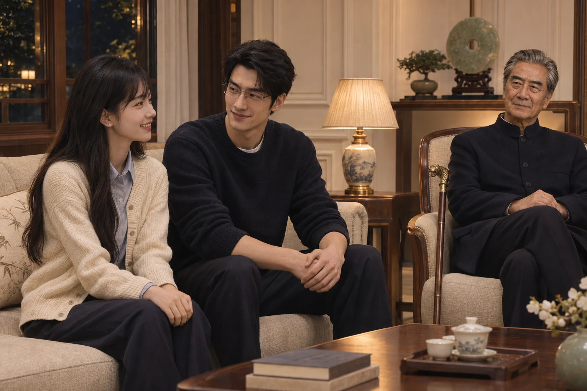

ตอนที่ 25
สองทางเลือก
“ถ้าเธอยังเป็นคนแบบนี้ สักวันนึงต้องตกต่ำแน่ โดยเฉพาะตอนที่ไม่มีคุณตาซ่งคุ้มกะลาหัว” เจียงเซินสะบัดศีรษะขับไล่ความมึนงง คิดเข้าข้างตนเองว่าที่เขาจะตบเมื่อครู่ เป็นเพราะเธอไม่เคารพพี่ชาย ควรถูกเรียกสติแรง ๆ สักครั้ง
“พี่คะ.. กักคนไว้ก่อน อย่าเพิ่งปล่อยออกมา ใช้เวลาไม่เกินหนึ่งนาที” ซ่งอวิ๋นบอกบอดี้การ์ดสาวผ่านหูฟังไร้สาย แววตาเย็นเยียบจนน่าขนลุก แม้แต่ซ่งจื้อยังดูออกว่าพี่สาวเขาโกรธจัดกว่าเมื่อครู่
“รับทราบค่ะ”
“พี่ลองพูดคำเมื่อกี้อีกทีสิคะ” ใบหน้ารูปไข่มีรอยยิ้มไปไม่ถึงดวงตา
“ฉันพูดอะไรผิด ที่เตือนเพราะหวังดี ตาแก่แล้ว จะตายวันตายพรุ่งก็ยังไม่รู้ ถ้าเธอยังไม่เปลี่ยนตัวเอง ถ้าตาตายไป ก็ไม่มีใครปกป้องเธอได้แล้ว” เจียงเซินย้ำเตือนโดยไม่รู้ว่าสิ่งที่ทำให้ซ่งอวิ๋นโกรธคือเรื่องปู่ซ่ง
“พี่สาว” ซ่งจื้อขนหัวลุก ขยับริมฝีปากไร้เสียง เผลอถอยหลังหนึ่งก้าว เขาสัมผัสความน่าเกรงขามแบบเดียวกับปู่ซ่งออกมาจากเรือนร่างเล็กบางของพี่สาว
ซ่งอวิ๋นพยักหน้านิด ๆ แล้วก้าวเข้าหาอย่างรวดเร็ว แววตาเย็นเฉียบ ก่อนจะเหวี่ยงหมัดแรกเข้าใส่ใบหน้าเจียงเซินเต็มแรง เสียงปะทะดังหนักจนศีรษะของคนตรงหน้าสะบัดไปด้านข้าง ร่างสูงเซถอยหลังหนึ่งก้าว
เจียงเซินยังไม่ทันได้ตั้งตัว หมัดที่สองและสามพุ่งตามมาทันที ซ่งอวิ๋นบิดเอวส่งแรงเต็มที่ กำปั้นกระแทกเข้าที่สันกรามเขาอย่างจัง
“อั่ก!” เสียงอุทานขาดห้วงดังขึ้นเพียงสั้น ๆ ดวงตาเจียงเซินเบิกกว้าง ก่อนสติจะดับวูบลงในเสี้ยววินาที แขนขาอ่อนแรงไร้การควบคุม ร่วงกระแทกพื้นดังตุบ
ความเงียบปกคลุมชั่วขณะ มีเพียงเสียงลมหายใจของซ่งอวิ๋น เธอยืนตัวตรง สายตาจับจ้องร่างที่นอนหมดสติอยู่ตรงหน้าโดยไม่เอ่ยคำใด
“ทำเกินไปแล้ว เขาเป็นพี่ชายเธอนะ” ซ่งหว่านทรุดกายลงนั่งดูอาการพี่ชายอย่างลนลาน ผิดกับตอนซ่งอวิ๋นปรี่เข้ามาลิบลับ เธอเอาตัวรอดเร็วกว่าใคร ไม่คิดปล่อยให้ใบหน้าสวย ๆ ของตนเองโดนลูกหลงแม้แต่น้อย
“น่ารำคาญ.. อาจื้อกลับบ้าน”
“ครับ พี่สาม” ซ่งจื้อหวั่นเกรง ไม่กล้าขัดใจพี่สาว
อันที่จริงจะว่าพี่สาวอ่อนแอจนต้องตามปกป้องนั้นไม่จริงเลย ในบรรดาหลาน ๆ ทุกคนของปู่ซ่ง คนที่ต่อสู้เก่งมีพี่สาวคนเดียวเท่านั้น คนอื่น ๆ ต่อสู้แบบผ่านมาตรฐาน แต่หากให้สู้กันตัวต่อตัว ร่างกายเล็กบางไม่เป็นอุปสรรคต่อการโค่นผู้ชายตัวโตเลย
“...” ซ่งหว่านมองตามแผ่นหลังซ่งอวิ๋น แววตาไร้อารมณ์ดุจปลาตายปรากฏความตื่นเต้น ปฏิเสธไม่ได้ว่าเธออิจฉาริษยาแทบบ้า แต่พอคิดว่าถ้าได้ซ่งอวิ๋นมาอยู่ในมือ เธอคงมีความสุขมากที่ได้เห็นอีกฝ่ายทรมาน
“หามพี่รองไปส่งที่บ้านเจียงด้วยค่ะ เล่าเรื่องที่เกิดขึ้นให้อาหญิงกับอาเขยฟัง ถ้าเขาไม่พอใจกับสิ่งที่ฉันทำ ให้พวกเขามาหาที่บ้านได้เลย” ซ่งอวิ๋นบอกบอดี้การ์ดอีกหลายคนที่อยู่ตามจุดต่าง ๆ ของลานจอดรถ
แน่นอนว่าพวกเขาเห็นเหตุการณ์ทุกอย่าง แต่ไม่ได้เข้ามาช่วยหรือยุ่มย่ามความขัดแย้งระหว่างพี่น้อง ส่วนหนึ่งมั่นใจว่าซ่งอวิ๋นรับมือได้สบายอยู่แล้ว
“ได้ครับ คุณหนูเดินทางกลับบ้านโดยสวัสดิภาพนะครับ”
“ขอบคุณค่ะ” แผ่นหลังบอบบางแนบเบาะนุ่ม ๆ ภายในห้องผู้โดยสารเหลือเพียงเสียงลมหายใจสองสายดังสลับไปสลับมา
ซ่งจื้อมองจนแน่ใจแล้วว่าอารมณ์ของพี่สาวกลับมาคงที่ เขาจึงถามขึ้นอย่างไม่แน่ใจนัก “พี่โกรธเพราะพี่รองพูดถึงคุณปู่ใช่ไหมครับ”
“อื้ม..” ซ่งอวิ๋นลูบหน้าตัวเองแรง ๆ ในฝันเธอเห็นคุณปู่เสียชีวิตไปเร็วจนแทบตั้งตัวไม่ทัน มันจึงเป็นความกลัวลึก ๆ ของเธอ การถูกเจียงเซินจี้จุดซ้ำ ๆ ทำให้เธอหมดความอดทน “พี่ใช้ความรุนแรงกับพี่น้อง นายอาจไม่เห็นด้วย แต่ความอดทนพี่มีจำกัด บางเรื่องปล่อยผ่านได้ บางอย่างก็ปล่อยให้ข้ามเส้นไม่ได้เหมือนกัน ขีดจำกัดของพี่คือแม่กับคุณปู่”
“ผมไม่ได้มองว่าสิ่งที่พี่ทำมันผิดนะ” ซ่งจื้อรีบส่ายศีรษะ แก้ความเข้าใจผิดของพี่สาว “เป็นผมก็คงโมโหมากเหมือนกัน”
“ขอบใจนะอาจื้อ บางทีอาหญิงรองอาจจะโกรธพี่มาก ๆ แต่พี่ไม่เสียใจเลยสักนิด” ซ่งอวิ๋นเลือนสายตามองออกไปนอกหน้าต่างอย่างไร้จุดโฟกัส
“อาหญิงไม่โกรธครับ ถ้าได้ฟังเรื่องราวทั้งหมด ต้องเข้าใจแน่นอนว่าทำไมพี่สามถึงหมดความอดทน..” ซ่งจื้อมั่นใจว่าอารองเป็นคนมีเหตุผล
“อาหญิงรองจิตใจดีจริง ๆ” ซ่งอวิ๋นคล้อยตามน้องชาย
“นอนพักสักนิดเถอะครับ กลับไปน่าจะวุ่นวายกว่าจะได้พักผ่อน” เขาเดาว่าอาหญิงรองต้องลากลูกชายมาขอโทษที่บ้านใหญ่แน่ ๆ
“เจ้าสาม..” ซ่งอวิ๋นหันกลับมาจากหน้าต่าง มองน้องชายด้วยแววตาอ่อนล้า แต่กลับอบอุ่นอย่างมาก
“ครับ?” เด็กหนุ่มเลิ่กลั่ก จู่ ๆ ก็จ้องหน้าเขา นี่เขาทำอะไรผิดไปหรือเปล่า
“ขอบใจนะที่ปกป้องพี่” หญิงสาววางมือลงบนไหล่แกร่ง “นายพึ่งพาได้มากจริง ๆ”

“อะแฮ่ม” เด็กหนุ่มยืดอกพลางเชิดหน้าขึ้น “วางใจได้เลยครับ ผมปกป้องพี่สามได้ตลอดชีวิต”
“ฮ่า ๆ ขอบคุณล่วงหน้าเลยแล้วกันนะ”
...
เจียงเซินถูกบอดี้การ์ดพามาส่ง พร้อมเล่าเรื่องราวที่เกิดขึ้นให้สองสามีภรรยาฟังโดยละเอียด แน่นอนว่าไม่มีการใส่สีตีไข่ เพราะพวกเขาถ่ายคลิปเก็บไว้เป็นหลักฐาน
“ทำไมต้องเข้าไปหาเรื่องน้อง” ซ่งเซียงยกมือนวดขมับ ปวดหัวจี๊ดขึ้นมา
“ผม..” เจียงเซินหลบสายตา พ่อกับแม่จ้องมองเขาตาเขม็ง พอจะอ้าปากพูดก็เจ็บไปทั่วโพรงปาก
อันที่จริงเขาไม่ได้สลบไปนานขนาดนั้น ตื่นตั้งแต่อยู่ในรถแล้ว แต่เขาไม่กล้าขัดขืน เพราะรู้ว่าบอดี้การ์ดเหล่านี้คุณตาส่งมาโดยเฉพาะ
“ว่าไง ไปหาเรื่องน้องทำไม” นายท่านเจียงโน้มกายไปด้านหน้า เท้าแขนไว้บนหน้าขา ความกดดันพุ่งขึ้นเป็นเท่าตัว

“มันมีเรื่องก่อนหน้านั้น อาจื้อกับซ่งอวิ๋นเห็นผมแล้วทำเมิน รีบเดินออกไปไม่สนใจผมสักนิด”
“แกยังไม่รู้ตัวอีกเหรอว่าปัญหามันอยู่ที่ใคร เจอหน้าทีไรก็โดนต่อว่าอย่างอคติ ไม่มีใครชอบหรอกนะ” ซ่งเซียงปวดใจ เสี่ยวอวิ๋นกับเจียงเซินแตกหักถึงขั้นไม่เรียกกันอย่างสนิทสนมอีกแล้ว
“...” เจียงกั๋วปล่อยให้ภรรยาสั่งสอนลูกชาย
“อีกอย่างที่แกโดนน้องตีมาเพราะแกลามปามไปถึงคุณตา” เธอรับไม่ได้ที่สุด การพูดถึงญาติผู้ใหญ่ในบ้านทำนองนี้ มันเหมือนการแช่งอยู่กลาย ๆ
“แม่จะบอกว่าผมสมควรโดนต่อยเหรอ” เจียงเซินดวงตาแดงก่ำ รู้สึกว่าตนเองไม่ได้รับความเป็นธรรม “ทำไมทุกคนเอาแต่เข้าข้างซ่งอวิ๋น ไม่ว่าจะทำอะไรก็ถูกไปหมด ทั้งที่นิสัยน่ารังเกียจขนาดนั้น”
ใบหน้าซ่งเซียงกลายเป็นเย็นชา “ได้ ฉันมีทางเลือกให้แกสองทาง”
ชายหนุ่มใจกระตุก เมื่อเห็นว่าน้ำเสียงและท่าทีมารดาเปลี่ยนไปกะทันหัน เขาเม้มปากแน่นเริ่มหวั่นเกรง
“ทางเลือกแรก.. ไปขอโทษเสี่ยวอวิ๋น ขอโทษคุณตา แล้วหลังจากนี้ต่างคนต่างอยู่ ถ้าเกลียดนักก็ทำตัวเป็นน้ำบ่อไม่ยุ่งน้ำคลองไปเสีย วันรวมญาติก็ไม่ต้องไป”
“...”
“ทางเลือกที่สอง ถ้าคิดว่าตัวเองยังหยุดสร้างปัญหาไม่ได้ ออกจากบ้านฉันไปซะ ไปอยู่กับคนที่แกคิดว่าดี”
“ผม.. ผมไม่ได้เกลียดสักหน่อย” เจียงเซินหันมองพ่ออย่างขอความช่วยเหลือ มั่นใจแล้วว่าครั้งนี้แม่โกรธเขาจริง ๆ
ทว่าเจียงกั๋วนั่งนิ่งเฉยเหมือนรูปปั้น ปล่อยให้ทุกอย่างเป็นการตัดสินใจของภรรยา
“เลือก” ซ่งเซียงไม่ฟังข้อแก้ตัวใด ๆ ทั้งสิ้น
“ผมจะ ผมไปขอโทษคุณปู่ก็ได้ครับ”

แม้ว่าเจียงเซินจะดูชักจูงง่าย และยึดมั่นในความคิดของตัวเองแบบสุดโต่ง แต่เขารู้ว่าหากออกจากบ้านตอนนี้ เขาคงไปไม่รอด อย่างไรเขาก็ยังเรียนไม่จบ ศักดิ์ศรีไม่ได้ทำให้เขามีชีวิตรอด
“ได้ ถ้าแกล้ำเส้นหรือหาเรื่องอีกครั้ง ก็ออกจากบ้านไป แกบรรลุนิติภาวะแล้ว”
...
สี่คนพ่อแม่ลูกตระกูลเจียงเดินทางมาที่บ้านใหญ่อย่างเร่งรีบ พอมาถึงฟ้าก็มืดเสียแล้ว ผู้เฒ่าซ่งยังไม่เข้านอน เขานั่งอยู่ในห้องรับแขกแสนโอ่อ่า ราวกับรู้อยู่แล้วว่าลูกสาวของเขาจะมาหา
เมื่อทักทายและทำความเคารพกันแล้ว ผู้เฒ่าซ่งก็พยักพเยิดหน้า “นั่งเถอะ มีอะไรก็ค่อย ๆ คุย”
เจียงกั๋วคาดเดาปฏิกิริยาตอบรับของผู้เฒ่าซ่งไว้หลายรูปแบบ แต่ไม่คิดว่าจะเห็นความใจเย็นเช่นนี้
“เสี่ยวอวิ๋นไปไหนเหรอคะคุณพ่อ”
“อาบน้ำอยู่.. นั่นไง ลงมาพอดี”
ซ่งอวิ๋นอาบน้ำอาบท่า ชำระล้างร่างกายตัวเองหลังจากเหนื่อยล้ามาทั้งวัน พอเห็นครอบครัวอาหญิงรองนั่งอยู่ในห้องรับแขก เธอก็ปรี่เข้าไปค้อมศีรษะทำความเคารพ
“สวัสดีค่ะ”
“อวิ๋นเอ๋อร์มานั่งกับพี่ใหญ่” เจียงซูทราบเรื่องทุกอย่างแล้ว เขาไม่โกรธเลยสักนิดที่เสี่ยวอวิ๋นต่อยเจียงเซิน เป็นเขาอาจไม่จบแค่ต่อย
“พี่ใหญ่..” หญิงสาวยิ้มออกทันที เดินเข้าไปนั่งข้างเขาอย่างสนิทสนม

อันที่จริงเธอเห็นอนาคตของพี่ใหญ่ไม่ชัดเจนมากนัก เพราะภาพมันตัดไปเร็วมาก
ในฝันนั้นจู่ ๆ พี่ใหญ่ก็ขับรถตกเหว คล้ายว่าก่อนหน้านั้นเขาจะไปทราบเรื่องสะเทือนใจบางอย่าง เหม่อลอยขาดสติจึงเสียชีวิตด้วยอุบัติเหตุทางรถยนต์ เธอเลยไม่รู้ว่าจะปกป้องเขาอย่างไร
มาอีกตอนนะคะ